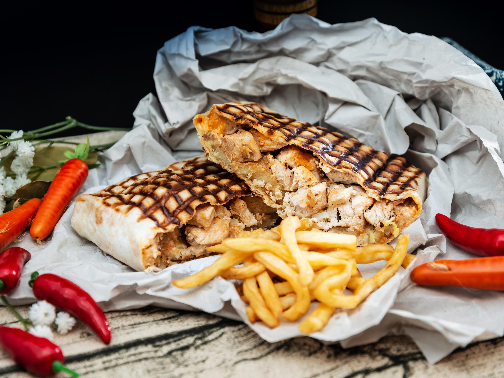

French Tacos

French Tacos are a delicious and popular street food in France, featuring a tortilla wrap filled with a mouthwatering combination of meats, cheese, and various flavorful toppings. They offer a unique fusion of Mexican and French culinary influences, resulting in a satisfying and savory treat that's perfect for on-the-go dining.
Ingredients
- Large tortilla wraps
- Grilled chicken, beef, or shawarma-style meat
- Melted cheese (typically Emmental or cheddar)
- French fries
- Lettuce
- Tomatoes
- Sauces (ketchup, mayonnaise, garlic sauce, etc.)
Steps
- Lay a large tortilla wrap flat on a clean surface.
- Place a generous portion of your choice of grilled meat onto the center of the tortilla.
- Sprinkle a layer of melted cheese over the meat.
- Add a handful of French fries on top of the cheese.
- Layer on fresh lettuce and sliced tomatoes.
- Drizzle your preferred sauces over the ingredients.
- Carefully fold the sides of the tortilla inward, then roll it up tightly from the bottom to create a burrito-like shape.
- Optionally, heat the assembled French Taco on a grill or panini press for a crispy exterior.
- Slice it in half and enjoy your homemade French Taco, bursting with flavors and textures.